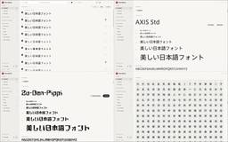

コリス
https://coliss.com
Web制作に関する最新の情報をご紹介
フィード
ノンデザイナーにお勧め！ 確かなデザイン力が身につくデザイン書 -デザイン力の基本が身につく実践ワーク 1
1
コリス
※本ページは、アフィリエイト広告を利用しています。 デザインの知識やテクニックを実際のデザインに使えるようにする、しっかりしたデザイン力を身につけることができるデザイン書を紹介します。 プロのデザイナーによる視点や思考プ […]
2日前

Web制作者は要チェック！ 新しいユニバーサルセレクタ、アプリのインストールを要求できるinstall要素など、Chrome 158で追加された6つのCSSとUIの新機能 12
コリス
昨日アップデートされたChrome 158に追加された、CSSとUIに関する新しい機能を紹介します。 今回のアップデートで注目は、新しいユニバーサルセレクタ「::highlight(*)」、Webアプリのインストールを要 […]
3日前

Windowsのフォント管理はこれが便利！ Windows10, 11対応、オープンソースの無料アプリ -tuna-fonts 47
コリス
当ブログでフォントを紹介する度に、「フォントの管理が、、、」という声がちらほら聞こえます。そんなフォントの管理に困っている人にぴったりのWindows10, 11対応のオープンソース無料アプリを紹介します。 インストール […]
4日前

最新のAIがぶっ飛んでる！ たった97KBのHTMLファイル1つだけで水中世界を探検できる -Abyssal Garden 16
コリス
先週Anthropicからリリースされた「Claude Fable 5.2」を使って、たった97KBのHTMLファイルだけで水中世界を泳ぎ回れる「Abyssal Garden」を紹介します。 使用しているのはHTMLファ […]
5日前
商用利用も無料の新作フリーフォントがリリース！ 「火炎焱燚」「水沝淼㵘」も揃ってる、厨二心がくすぐられる「図電ピッピ」 2
コリス
「ピグモ00」「マキナス」「マメロン」「廻想体」「金畫字」など、人気のフリーフォントを数多くリリースされている「もじワク研究」さんから、新作のフリーフォントがリリースされたので、紹介します。 新作フォントは「赤い光弾ジリ […]
6日前

マンガや同人誌で使われるオノマトペ（描き文字）の描き方や使い方を詳しく解説 -マンガを彩る"描き文字"の描き方
コリス
※本ページは、アフィリエイト広告を利用しています。 擬音語・擬態語「オノマトペ」の辞典や事例集は数多くありますが、マンガや同人誌で使われるオノマトペ（描き文字）についての解説書は初だと思います。 目には見えない音や感情を […]
9日前
商用でも無料のフォントを探すときに便利！ 日本語フォントをはじめ、オープンソースの無料で使えるフォントがまとめられた -Font Fam
コリス
日本語のオープンソースで使えるフォントをはじめ、オープンソースで使えるフォントをまとめたサイトを紹介します。 2026年11月現在、854人のフォントデザイナーによる2,253種類のフォントが収録されており、プレビュー機 […]
10日前
macOSでこれは便利！ アプリ、フォルダ・ファイル、リンク、ショートカットを1つのメニューに集約できるアプリ -Super Menu
コリス
macOSで、どこからでもアプリ、フォルダ・ファイル、リンク、ショートカットなどに1クリックでアクセスできるユーティリティアプリを紹介します。 まるで小さなDockで、アプリをグループ化して整理したり、フォルダは下層も表 […]
11日前
デザインやイラストの配色に便利！ キーワードから連想されるカラーパレットを生成できる無料ツール -Keyword Palette
コリス
デザインやイラストに取り組むとき、雰囲気やイメージを言葉で表現することがよくあると思います。言葉やキーワードから連想されるカラーパレットを生成してくれる無料ツールを紹介します。 海外のツールですが、日本語で入力しても問題 […]
12日前
Adobe CCユーザーに朗報🎉 2026年11月、Adobe Fontsに日本語フォントが大量追加、CCユーザーは無料で使えます
コリス
11/10から開催されるAdobe MAX 2026に合わせて、Adobe Fontsに日本語フォントが大量に追加されました！ 今回はなんと、高原 新一氏の「タカ書体」が加わりました。これは完全に想定外です。ほかにも「し […]
13日前